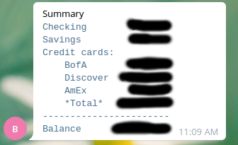

DIY Bank balance aggregation#
I like to know what my credit card balance is. And I don’t want to visit all online bank accounts every day. So I automated this process. In a secure and reusable way.
I built my solution on top of Kibitzr - self-hosted web scrapper. It logs into online bank accounts and extracts balances. Kibitzr has a curated snippets collection. So I picked the snippets for my banks and mashed them into one file:
Let me explain how it works. There are 3 scrapping checks defined in this file: BofA, Discover, AmEx. Each check opens one bank account, scrapes balance value, and saves it to stash. Stash is a Kibitzr’s persistent key-value storage. In other words, it’s a place where you can put data for later use.
The fourth check does the aggregation of all balances into one template and sends it to my Telegram account. (Actually, it sends it to me and my wife private group).
All scrapping checks are alike, so I will break down the first one.
Check declares its name:
- name: BofA
Opens Firefox browser to open bank’s home page:
url: https://www.bankofamerica.com/
Fills the form picking values from secure Operating System’s keyring:
form: - id: onlineId1 creds: keyring.bofa.username - id: passcode1 creds: keyring.bofa.password - id: hp-sign-in-btn click: true
Waits for 5 seconds to let the dynamic dashboard load:
delay: 5
Extracts text from all HTML elements having CSS class
.balanceValueassigned.transform: - css-all: .balanceValue - text
I have 3 accounts in Bank of America: checking, savings, and credit. They always go in this order, so I stash their values under corresponding keys:
notify: - stash: bofa_checking: "{{ lines.0 }}" bofa_savings: "{{ lines.1 }}" bofa_credit: "{{ lines.2 }}"
This task runs every 3 hours:
period: 3 hours
Other 2 scrapping checks do the same thing for other banks. After their execution I have all the data I need to create a report:
I called aggregation check Summary:
- name: Summary
It uses dummy bash fetcher. Because Kibitzr requires something to act as a fetcher.
script: echo dummy
Jinja template does all the heavy lifting. It looks scary at first sight. But on closer look, it’s simple assigning and arithmetic.
Finally, Kibitzr sends a shiny report through Telegram:
notify: - telegram
Then I saved my telegram bot credentials in kibitzr-creds.yml:
telegram:
token: 341530401:AABCRg_snz1554qkslIS8tMnNfWT3p5P80X
chat: 926461341
I can’t say that I composed the whole thing from the first attempt. But after some tweaking and poking, I’ve got a working configuration, that sends me notifications like this one:
